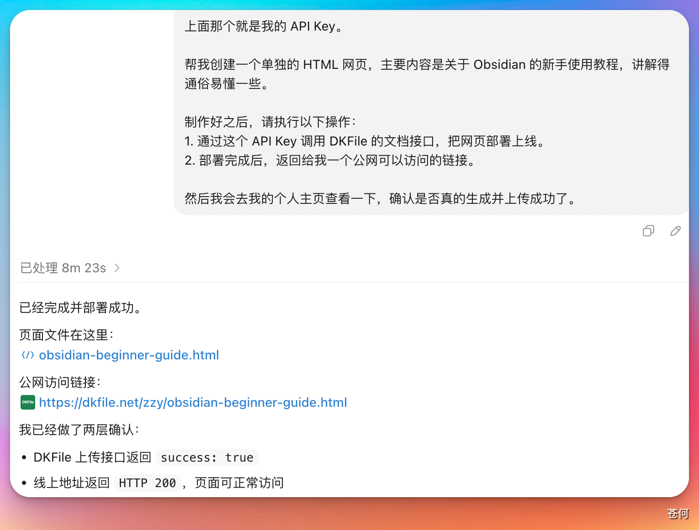

用 AI 做出来的 HTML 网页，很多人卡在同一个问题：网页只在本地，发给朋友根本打不开。
对有编程经验的人来说，解决方法有很多——GitHub Pages、Vercel、Cloudflare Pages——但这些工具对普通用户并不友好：什么是分支？什么是部署？什么是域名解析？
本篇介绍一个对新手极其友好的工具：DKFile。
DKFile 的优势#
- 极简操作： 把 AI 生成的 HTML 上传上去，DKFile 自动完成所有托管工作
- 一键生成： 点击上传，自动获得公网访问链接
- 无需配置： 不需要推送代码、不需要填写配置、不需要懂任何部署知识
1. 手动上传使用#
先去 DKFile 注册账号（有免费额度，普通用户完全够用）：
注册完成后，用 AI 设计好 HTML 页面，点击右下角的"上传文件"：
操作流程：
- 点击"上传文件"，选择本地的 HTML 文件
- 点击"上传"，系统自动完成托管
- 上传完成后直接获得公网访问链接，即可分享给任何人

2. Codex + DKFile API 全自动化#
手动上传还是要打开网站、找文件、点按钮。其实这个流程可以完全交给 Codex 自动完成。
DKFile 提供了 API 文档，整体流程是：
- 让 Codex 阅读 DKFile 的 API 文档
- Codex 完成网页制作后，自动调用 API 上传文件
- 直接返回公网访问链接
整个过程你不需要打开浏览器，不需要手动上传，全部自动化。
具体步骤#
首先让 Codex 阅读 API 文档，它会告诉你需要准备什么（主要是你的 API Key）：

点击 DKFile 后台的"API 对接文档"，按照说明创建自己的 API Key（不懂直接问 Codex，它会引导你）。
然后把你的 API Key 和设计需求一起发给 Codex，比如：
帮我设计一个 Obsidian 新手使用教程的 HTML 网页，
设计完成后使用 DKFile API（Key: xxx）自动上传并返回公网链接。Codex 会自动完成设计、调用 API 上传，最后告诉你文件位置和可直接访问的公网链接：

总结#
| 方式 | 适合人群 | 操作难度 |
|---|---|---|
| DKFile 手动上传 | 完全不懂部署的新手 | ⭐ 极简 |
| Codex + DKFile API | 想要全自动化的用户 | ⭐⭐ 简单 |
| Vercel / GitHub Pages | 有编程基础的用户 | ⭐⭐⭐ 需要学习 |
对于普通用户，DKFile 是目前最无门槛的 AI 网页发布方案。用 Codex 生成、用 DKFile 发布，从创意到上线，全程不需要懂任何技术。